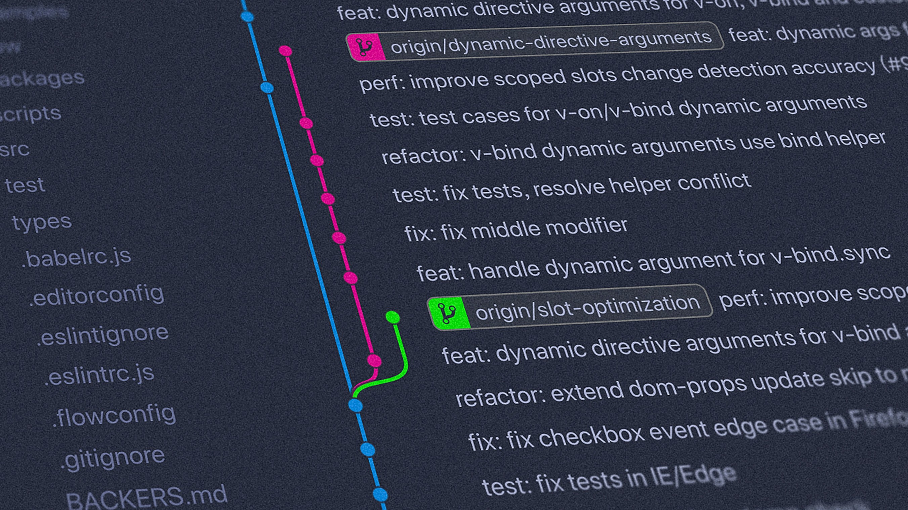

What is the purpose of a README file?
A README file is a key document that introduces and explains a
software project. It provides an overview of what the project does,
how to install and use it, and what technologies or dependencies it
requires. For collaborative projects, it may also include contribution
guidelines, licensing information, and credits.
It helps new users and developers quickly understand the purpose and
structure of the project, making it easier to get started or
contribute. It's often the first point of reference, serving as both a
user manual and a guide for anyone interacting with the codebase.
What is the purpose of a wireframe?
A wireframe is a basic visual guide used to plan the layout and
structure of a web page or application. It outlines the placement of
elements like headers, images, buttons, and menus without focusing on
design details such as colors or graphics.
The main purpose of a wireframe is to help developers and designers
organize content, define functionality, and ensure a clear user flow
before development begins.
Wireframes are useful for identifying potential issues early and
encouraging collaboration between team members and clients. They serve
as a blueprint to guide the design and development process
effectively.

What is a branch in Git?
A branch in Git is a separate version of the codebase that allows
developers to work on changes independently from the main project.
It's commonly used to develop new features, fix bugs, or test ideas
without affecting the main branch, often called main or master.
When a branch is created, it copies the current state of the code, and
changes made in that branch do not affect others until they are
merged.
Branching makes it easier for teams to collaborate and manage
different parts of a project in parallel, helping avoid conflicts and
maintain a clean development workflow.